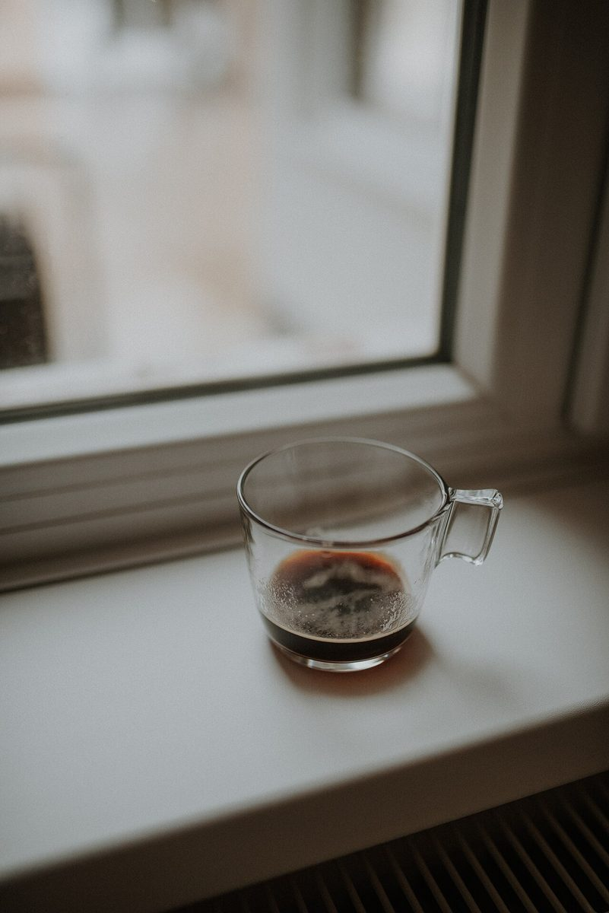
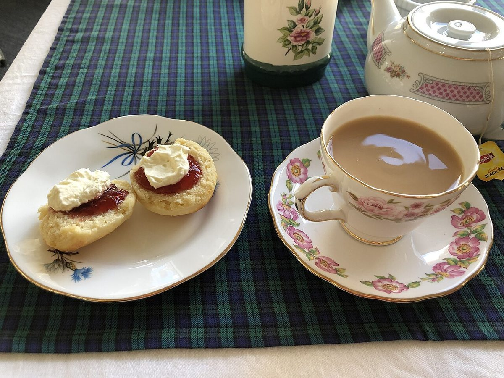

制作側の連想
「ぬく」の響きから、等温線を引いてみた
店名の由来は分かりません。制作側は「ぬく」という響きから「ぬくい」「ぬくもり」といった言葉を連想しました。そこでこのページは、天気図の等温線のように、写真を色味の「冷たい」ものから「暖かい」ものへ並べる作りにしています。これは制作側の連想で、お店の理念や由来とは無関係です。お店が暖かい、といった意味でもありません。
00°
色味のいちばん冷たい帯
灰色・白に近い写真。色の印象だけで並べています(写真はイメージです)。


10°
すこし冷たい帯
白と若草色、淡い灰茶、緑がかった暗めの色。



15°
ぬるい帯
青緑から黄金色、赤みのある茶へ。


20°
色味のいちばん暖かい帯
電球色や橙、紺と白磁の取り合わせ。



ご案内
お店のこと(確認できたものだけ)
| 所在地 | 〒950-0083 新潟県新潟市中央区蒲原町5-14 |
|---|---|
| 電話 | 080-3496-6623 |
| 営業時間 | 準備中 |
| 定休日 | 準備中 |
| ご予約 | 準備中 |
| 駐車場 | 準備中 |
| SNS | Instagram @nuku_cafe |